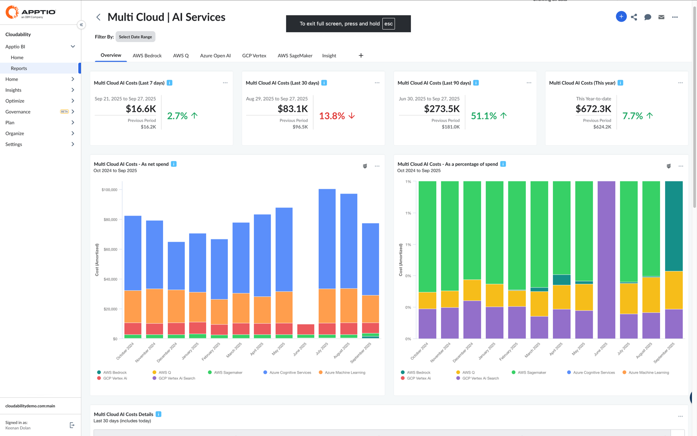
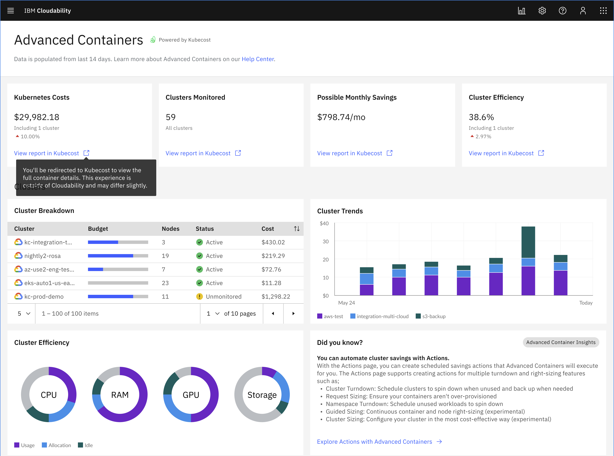
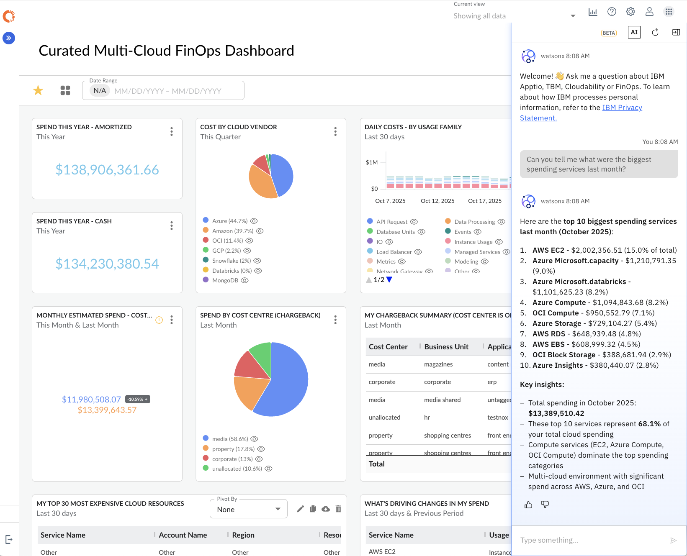
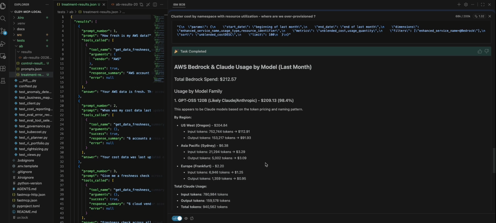
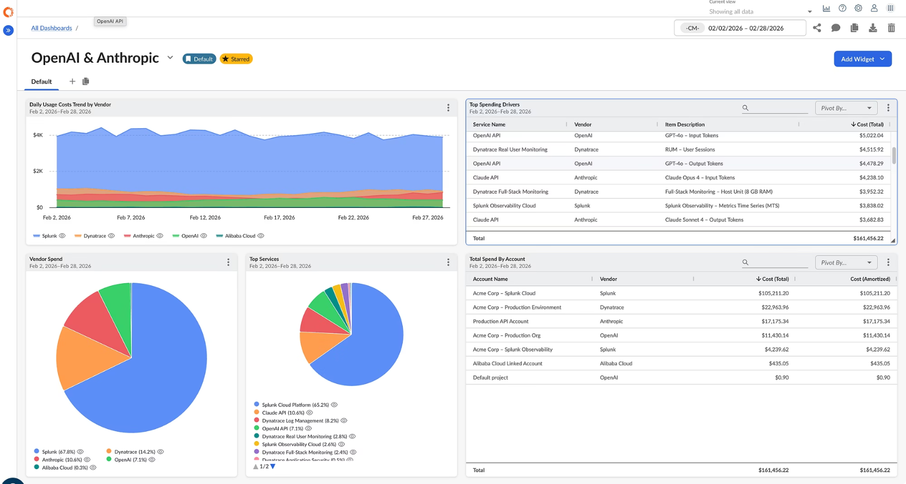
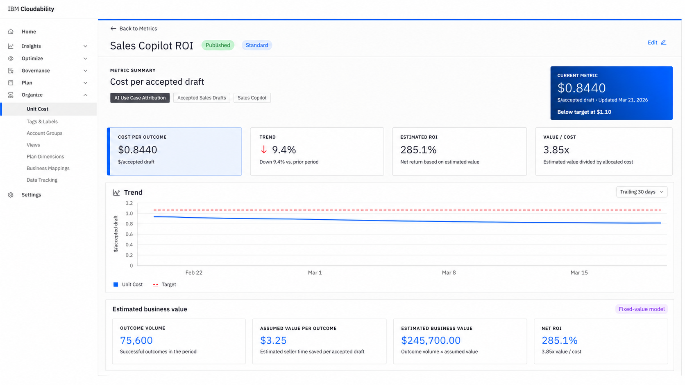
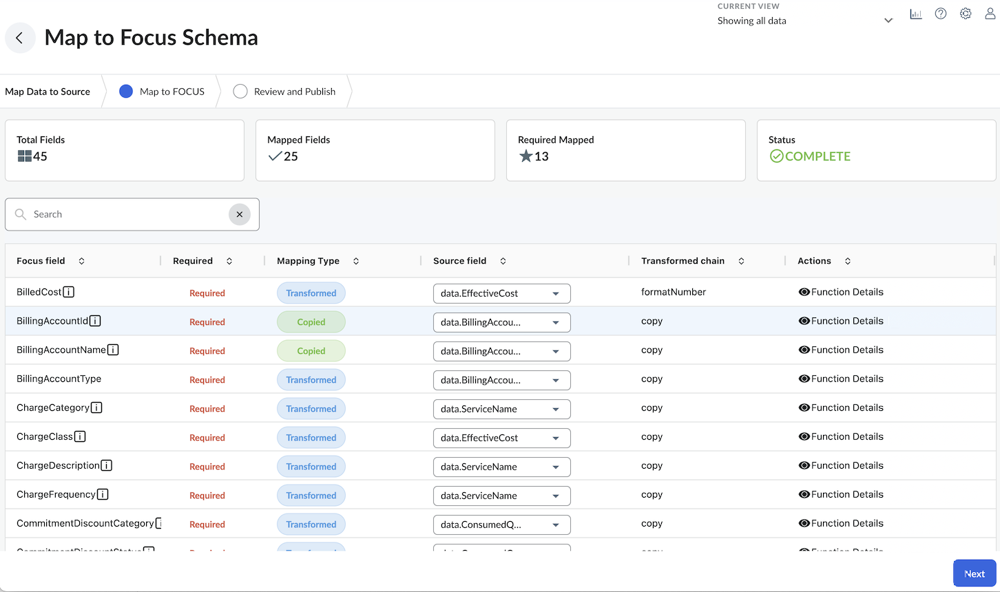
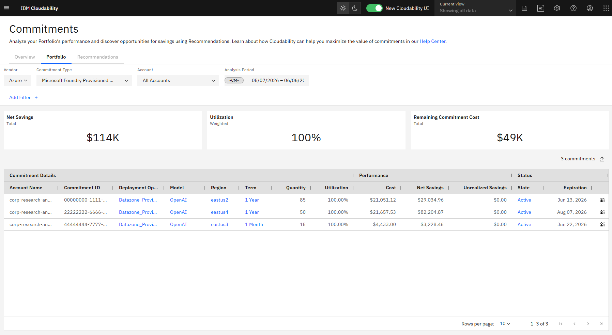

Control AI spend across models, clouds, and teams
IBM Cloudability and IBM Kubecost give finance, engineering, and AI leaders a governed view of token, GPU, API, cloud, and Kubernetes costs — so every dollar drives measurable business value.
Every team has a stake in AI spending, but no team has the full picture
AI costs are spread across clouds, models, vendors, APIs, GPU infrastructure, and third-party platforms. Finance, engineering, and AI leaders each see only a fraction of the total.
CIO
Needs a portfolio-wide view of AI priorities, spending, and ROI. 67% of CIOs say board pressure to justify AI spending is increasing faster than their ability to measure ROI.
IT Finance
Needs unified AI total cost of ownership across cloud, vendors, and labor. Only 7% of AI spending is tracked under innovation budgets.
Cloud Center of Excellence
Needs telemetry and tagging to connect GPU spending with teams, projects, and workloads. 37% of enterprises run five or more LLMs in production.
AI & Innovation Leadership
Needs benchmarks and tools that demonstrate business value. AI spending grew 3× from 2023 to 2025 while many organizations still lack governance controls.
AI spending is invisible — and growing fast
Distributed cost, zero visibility
AI spending is distributed across multiple clouds (AWS, Azure, GCP), model providers (OpenAI, Anthropic), GPU infrastructure, and SaaS tools like Cursor. Most organizations have no single pane of glass to see the total cost — let alone break it down by team, project, or business outcome.
Usage without accountability
Token consumption, API calls, and GPU hours rarely connect back to the teams, products, or workloads that generated them. Without allocation and showback, there's no path to optimization — and no way to prove which AI investments create value.
AI cost management applies FinOps practices to AI workloads
Core capabilities that give every stakeholder the visibility and control they need.
Cost Visibility
Track AI services across AWS, Azure, and Google Cloud. Capture OpenAI, Anthropic, Cursor, and other third-party AI costs. Measure token, API, GPU, and model usage.
Allocation & Showback
Categorize spending by model, team, workload, project, or business unit. Allocate costs for showback and chargeback with governed business mappings.
Forecasting & Governance
Watsonx-powered forecasting models with automatic selection and accuracy scoring. Pre-deployment cost evaluation and automated policy enforcement.
GPU & K8s Optimization
Identify underused or oversized GPU infrastructure. Rightsizing recommendations and automated resource optimization with private-rate-aware savings estimates.
Proven platforms, purpose-built for cloud and Kubernetes FinOps
IBM Cloudability
Multi-cloud AI services dashboard with unified AWS, Azure, and GCP cost visibility. AI cost tracking through FOCUS, intelligent Watsonx forecasting, rightsizing recommendations, governance with GitHub Enterprise and Azure support, and ServiceNow CMDB integration — all in a single governed platform.
- Multi-cloud AI cost dashboard with 7d / 30d / 90d / YTD comparisons
- Cost-per-token and usage analysis by model, team, and workload
- Watsonx forecasting with automatic model selection & accuracy scoring
- Pre-deployment cost evaluation and automated policy enforcement
- ServiceNow CMDB synchronization for consistent business logic

IBM Kubecost
Enterprise Kubernetes cost management with automated resource quota sizing, custom pricing support, guided cloud account onboarding, advanced container cost analysis, and network traffic attribution — bridging finance, engineering, and platform teams.
- Automated resource quota sizing with audit logs
- Custom pricing upload, validation, and historical repricing
- Guided cloud account onboarding with configuration diagnostics
- Kubernetes cost analysis alongside cloud infrastructure
- Network traffic cost attribution across zones, regions, and NAT gateways

What's coming next
Planned capabilities that extend AI cost management with natural language, automation, and business value measurement.

AI Assistant
Ask plain-English questions about cloud cost and usage. Receive guidance about FinOps and Cloudability. Help non-technical users understand spending.

MCP Server
Access Cloudability through natural language via open protocols. Connect Cloudability data with AI agents and applications. Add trusted financial context to operational workflows.

Direct AI Data Integrations
Normalize AI provider cost and usage. Combine provider data at daily granularity. Support allocation and business mappings. Enable AI showback and chargeback.

Unit Costing & Business Value
Combine governed spending with operational telemetry. Calculate cost per business outcome. Identify AI use cases that create value and detect workloads requiring optimization.

FOCUS Agent
Use AI to map inconsistent vendor data into the FOCUS schema. Validate billing data during ingestion. Reuse mappings across vendors and reduce schema-drift risk.

AI Commitment Support
Track provisioned-throughput commitments. Generate purchasing recommendations. Support what-if analysis and improve chargeback and showback reporting.
Why a managed platform beats build-your-own
General-purpose AI tools can process data and detect anomalies — but they lack the governed financial model, enterprise controls, and continuous maintenance that cloud cost management demands.
| Capability | AI + Custom Build | IBM Cloudability |
|---|---|---|
| Data Ingestion | Custom pipelines per provider | Built-in and maintained |
| FOCUS Normalization | Manual schema mapping | Automated with AI agent |
| Cost Allocation | Custom logic per team | Prebuilt & configurable |
| Optimization | Manual or scripted | Automated & continuous |
| Governance & Audit | Custom implementation | Built-in with RBAC |
| Maintenance | Ongoing engineering burden | Managed platform |
HERE Technologies
HERE Technologies needed financial management for expanding AI investments across AWS, Azure, and GCP. With IBM Cloudability, they achieved:
- Nearly 100% cloud cost allocation, including AI workloads
- Improved financial accountability across teams
- Proactive AI infrastructure optimization
- Better alignment between AI investments and business priorities
Ready to bring financial control to AI spending?
Connect AI consumption with business ownership, unit economics, and continuous optimization. Let's explore how IBM Cloudability and Kubecost can work for your organization.